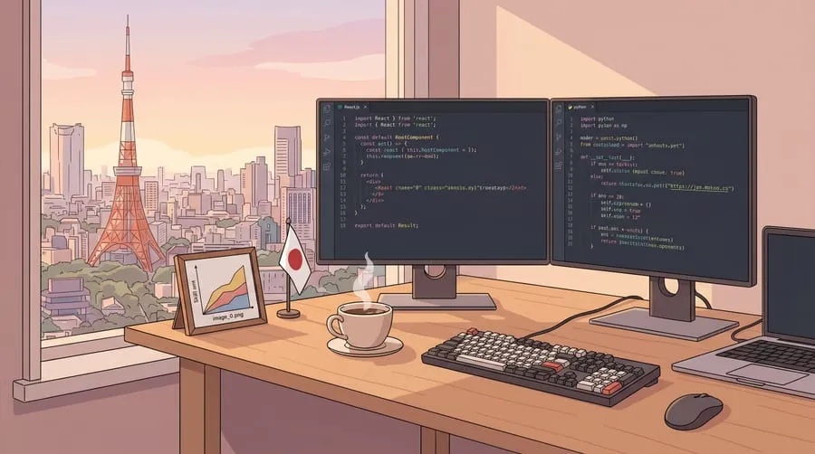

Best Job Hunting Platforms
The first step to landing an IT job in Japan is knowing where quality listings are posted. Different platforms serve different audiences and offer different opportunities. Here are the platforms that are truly worth your time.
IT-Specific Platforms
Wantedly
Best for startups and modern tech companies. Focuses on company culture rather than salary.
Green
The largest IT job platform in Japan. Filter by tech stack, remote/hybrid work model, and seniority level.
Forkwell
Designed specifically for developers. You can attach your GitHub profile directly to applications.
Findy
Automatic matching based on your GitHub activity. Great for developers active in open source.
Platforms for Foreign Developers
TokyoDev
The largest platform specifically for foreign developers. Many companies ready to sponsor work visas.
JapanDev
Focused on IT jobs for foreigners. Includes a blog, salary data, and insights into Japanese work culture.
GaijinPot Jobs
Many English-friendly job listings. Ideal for those who are not yet fluent in Japanese.
General Platforms
A complete profile is essential. Many Japanese recruiters actively search for candidates here.
Bizreach
A premium platform for mid-senior level roles. Many active headhunters reaching out to candidates.
Doda
One of the largest job platforms in Japan. Extensive listings across all fields, including IT.
Japanese CV Format
In Japan, job applications require two separate documents, each serving a different purpose. This is not just a formality — recruiters genuinely read both of them.
- 履歴書 (Rirekisho) — The traditional Japanese CV format. It uses a standardized template containing personal information, educational background, and qualifications. Almost all companies expect this format.
- 職務経歴書 (Shokumu Keirekisho) — A detailed record of your work experience and achievements. For IT positions, this document is far more important than the Rirekisho. This is where you demonstrate your technical abilities with concrete evidence.
Tip: Avoid generic statements like "Responsible for system development." Replace them with specific descriptions: "Developed a REST API using Laravel 10 and PostgreSQL serving 50,000 requests/day with 99.9% uptime." Concrete numbers and tech stack details make your CV stand out.
Interview Process — 5 Stages
The selection process at Japanese IT companies typically consists of five stages. The entire process can take 3-6 weeks depending on the company.
Document Review
HR reviews your CV (Rirekisho + Shokumu Keirekisho) and motivation letter. This process usually takes 1-2 weeks. Make sure your documents are polished before submitting.
Online Test
A coding test in a HackerRank-style format or a logic test. Some companies use their own platforms. Typically 60-120 minutes with 2-4 algorithm problems.
HR Interview
An interview about your background, motivation for working in Japan, and culture fit. Common questions include: "Why Japan?" and "What are your long-term plans?"
Technical Interview
Live coding, system design discussion, and an in-depth review of your previous projects. This stage is typically conducted with a senior engineer or tech lead.
Final Interview
An interview with a manager, CTO, or director. The focus is on vision, long-term commitment, and alignment with the company's direction. This is not a formality — many candidates fail at this stage.

Most In-Demand IT Skills
The Japanese IT job market has specific needs. Here are the most sought-after skills based on listings on Green, Wantedly, and TokyoDev throughout 2025-2026.
Tip: Pick one stack and master it deeply. Japanese companies value depth over breadth. A "Java expert" is far more attractive than someone who "knows a little Java, Python, Go, and Ruby."

Recognized Certifications
Certifications carry significant weight in Japan, especially at traditional and enterprise companies. Some are even required for salary increases or promotions.
- IPA FE (基本情報技術者) and AP (応用情報技術者) — Official certifications from the Japanese government. Highly recognized at nearly all companies, and also useful for visa applications.
- AWS Solutions Architect — The most sought-after cloud certification right now. Many companies consider it a major plus.
- Oracle Database — Highly valued at enterprise companies and SIer (System Integrator) firms, which still dominate the Japanese market.
- Google Cloud & Azure — Demand continues to rise as cloud provider diversification grows in the Japanese market.
Preparation Tips
Before you start applying, there are several things you need to prepare well in advance. Do not let a great opportunity slip by because your documents are not ready.
- Get your degree authenticated and apostilled — This process takes 2-4 weeks. These documents are required for work visa applications.
- Aim for JLPT N3 at minimum, ideally N2 — N2 opens many doors, including at companies that list "Japanese required." N3 is sufficient for English-friendly positions.
- Build an active GitHub profile — Regular commits, open source contributions, and well-organized personal projects. This is your "second CV" in the eyes of tech recruiters.
- Research 10-20 target companies — Read their engineering blogs, understand their tech stack, and learn about their work culture through OpenWork or Glassdoor.
- Prepare a motivation letter for each company — You can use the same template, but customize the opening and your specific reasons for wanting to join that particular company. A generic letter equals an instant rejection.
Realistic timeline: From starting document preparation to receiving an offer, expect 3-6 months. Start preparing now if you are targeting a move next year.